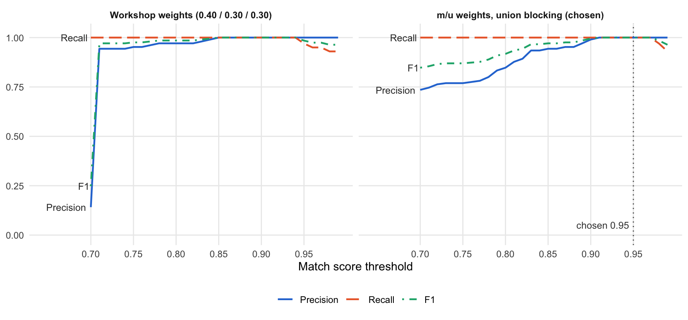

library(tidyverse)
library(stringdist)
library(knitr)
# Formatting helpers for inline numbers
f2 <- function(x) formatC(x, format = "f", digits = 2)
f3 <- function(x) formatC(x, format = "f", digits = 3)
n0 <- function(x) format(x, big.mark = ",", scientific = FALSE, trim = TRUE)
pct <- function(x, d = 0) paste0(formatC(100 * x, format = "f", digits = d), "%")
pl <- function(n, one, many = paste0(one, "s")) paste(n, if (n == 1) one else many)
kbl <- function(x, digits = 3, ...) knitr::kable(x, digits = digits, format.args = list(big.mark = ","), ...)EPPS 6302 Methods of Data Collection and Production: Assignment 8
Record Linkage — Linking administrative records with deterministic and probabilistic methods
Instructor: Karl Ho
What you will produce
A documented record linkage of two simulated administrative files, TRS and TEA, with a quality assessment against a known answer key. You will change the data-generating process and the decision rules, measure how precision and recall respond, and write a short report on what a linked file can and cannot tell you.
How this page renders
Quoted blocks are the assignment sheet, word for word; the code and notes under each one are my work.
Every chunk runs at render time. The data are simulated by the workshop script with set.seed(42), and the whole page takes a few seconds, so nothing is cached by hand. Rendering needs record_linkage_workshop.R in this folder or in ../Workshop/. The page never prints a generated record: names are masked to their first letter, dates of birth are cut to the year, and the error tables show record IDs and similarity scores only (6c).
0. Set up
0a. Run the workshop script
a. Run
record_linkage_workshop.Rfrom top to bottom in a new project folder. Check that it prints the TRS and TEA samples, the validation set, and the quality metrics without error. If a line fails, check the debugging log in the student handout before you ask for help.
The script runs unchanged, in its own environment (ws), so its objects and functions stay separate from mine. Its console output is captured rather than printed, because its samples show the generated names; the checks below repeat what it prints, with names masked. The logger’s INFO lines go to a log file, shown after the checks.
# The script sits in this folder or in the course Workshop folder
ws_candidates <- c("record_linkage_workshop.R", "../Workshop/record_linkage_workshop.R")
ws_path <- ws_candidates[file.exists(ws_candidates)][1]
if (is.na(ws_path)) stop("record_linkage_workshop.R not found next to this file or in ../Workshop/")
ws_log <- tempfile(fileext = ".log")
logger::log_appender(logger::appender_file(ws_log)) # INFO lines to a file, not the page
ws <- new.env()
ws_out <- suppressMessages(capture.output(source(ws_path, local = ws)))mask <- function(x) paste0(substr(x, 1, 1), strrep("*", pmax(nchar(x) - 1, 0)))
mask_records <- function(df) {
df %>%
mutate(across(c(first_name, last_name), mask),
dob = format(dob, "%Y")) %>%
rename(birth_year = dob)
}
ws$trs_data %>% head(3) %>% mask_records() %>%
select(record_id, first_name, last_name, birth_year, years_service, salary_group) %>%
kbl(caption = "TRS sample (names masked, birth year only)")| record_id | first_name | last_name | birth_year | years_service | salary_group |
|---|---|---|---|---|---|
| TRS_1 | J*** | M******* | 1955 | 21 | Secondary |
| TRS_2 | M****** | H******** | 1951 | 27 | Secondary |
| TRS_3 | J*** | M******* | 1954 | 32 | Elementary |
ws$tea_data %>% head(3) %>% mask_records() %>%
select(record_id, first_name, last_name, birth_year, certification, school_district) %>%
kbl(caption = "TEA sample (names masked, birth year only)")| record_id | first_name | last_name | birth_year | certification | school_district |
|---|---|---|---|---|---|
| TEA_1 | J** | M******* | 1955 | Math | District_18 |
| TEA_2 | M****** | H******** | 1951 | Social Studies | District_41 |
| TEA_3 | J*** | M******* | 1954 | Special Ed | District_41 |
ws$validation_set %>% head(5) %>% kbl(caption = "Validation set (answer key), first 5 of 100 rows")| trs_record_id | tea_record_id | is_match |
|---|---|---|
| TRS_1 | TEA_1 | TRUE |
| TRS_2 | TEA_2 | TRUE |
| TRS_3 | TEA_3 | TRUE |
| TRS_4 | TEA_4 | TRUE |
| TRS_5 | TEA_5 | TRUE |
ws$det_result$summary %>% kbl(caption = "Deterministic rules")| Rule | Matches |
|---|---|
| Rule 1 | 80 |
| Rule 2 | 9 |
| Rule 3 | 4 |
ws$quality_assessment$metrics %>% kbl(caption = "Quality metrics, as the script prints them")| Metric | Value | Interpretation |
|---|---|---|
| Precision | 1.000 | Of matches we made, what % were correct? |
| Recall | 0.970 | Of all true matches, what % did we find? |
| F1-Score | 0.985 | Harmonic mean of precision and recall |
| Accuracy | 0.970 | What % of all decisions were correct? |
ws$quality_assessment$confusion_matrix %>% kbl(caption = "Confusion matrix, as the script prints them")| Metric | Count |
|---|---|
| True Positives | 97 |
| False Positives | 0 |
| False Negatives | 3 |
| True Negatives | 0 |
cat(readLines(ws_log), sep = "\n")INFO [2026-11-17 13:27:48] Starting deterministic linkage...
INFO [2026-11-17 13:27:48] Applying Rule 1: Last name + First name + DOB
INFO [2026-11-17 13:27:48] Rule 1 found 80 matches
INFO [2026-11-17 13:27:48] Applying Rule 2: Last name + First initial + DOB
INFO [2026-11-17 13:27:48] Rule 2 found 9 matches
INFO [2026-11-17 13:27:48] Applying Rule 3: Last name + First name + DOB (±1 day)
INFO [2026-11-17 13:27:48] Rule 3 found 4 matches
INFO [2026-11-17 13:27:48] Assessing linkage quality against validation set...
INFO [2026-11-17 13:27:48] Running sensitivity analysis on thresholds...The script ran without error. Its three rules link 93 pairs (80, 9, 4), which leaves 407 TRS and 407 TEA records — 165,649 pairs — for the probabilistic step. Two things in the printed metrics need care:
- Accuracy equals recall.
assess_linkage_quality()builds its table from the answer key and our links only, so no true negative is ever counted (TN = 0) and “accuracy” is TP / (TP + FN). Against all 250,000 TRS × TEA pairs, accuracy would be 0.999988, which is why the handout warns against it. The pages below use precision, recall and F1 only. - The sheet’s 499 × 499 (2c) does not match the script, which leaves 407 × 407. The numbers on this page are the script’s.
0b. Packages
b. Packages:
tidyverse,stringdist,phonics,data.table,logger. Check withpackageVersion("stringdist"). Installphonics(notphonetic, which is not on CRAN).
pkgs <- c("tidyverse", "stringdist", "phonics", "data.table", "logger")
tibble(package = pkgs,
version = map_chr(pkgs, ~ as.character(packageVersion(.x)))) %>%
kbl()| package | version |
|---|---|
| tidyverse | 2.0.0 |
| stringdist | 0.9.17 |
| phonics | 1.4.0 |
| data.table | 1.18.6.1 |
| logger | 0.4.3 |
packageVersion("stringdist")[1] '0.9.17'The script loads phonics but never calls it; no part of this page uses phonetic codes.
0c. Keep the seed
c. Keep the seed.
set.seed(42)must stay at the top of the data generator so that your results can be reproduced.
make_data() re-runs the workshop’s three generator functions with a chosen corruption rate. set.seed(42) is its first line, so every rate starts from the same random state. With the workshop’s rate (0.20) it reproduces the script’s TRS and TEA files exactly; the check below stops the render if it does not.
make_data() also records what the generator did to each true match, by comparing the copied fields. This is known only because the data are simulated; it is used to name error causes in 4a.
std_records <- function(df) {
df %>%
mutate(
first_name_std = ws$standardize_names(first_name),
last_name_std = ws$standardize_names(last_name),
first_initial = substr(first_name_std, 1, 1),
dob_std = ws$standardize_date(dob)
)
}
make_data <- function(corruption_rate = 0.20, n = 500, num_matches = 100) {
set.seed(42) # keep: the seed stays at the top of the data generator
trs <- ws$create_trs_data(n)
tea <- ws$create_tea_data(trs, n, num_matches, corruption_rate)
key <- ws$create_validation_set(trs, tea, num_matches)
# What the generator did to each true match (one change at most per record)
i <- seq_len(num_matches)
dgp <- tibble(
trs_record_id = trs$record_id[i],
tea_record_id = tea$record_id[i],
first_changed = trs$first_name[i] != tea$first_name[i],
last_changed = trs$last_name[i] != tea$last_name[i],
dob_changed = trs$dob[i] != tea$dob[i],
last_std_same = ws$standardize_names(trs$last_name[i]) ==
ws$standardize_names(tea$last_name[i]),
corruption = case_when(
first_changed ~ "Abbreviation",
last_changed & last_std_same ~ "Typo erased by standardizing",
last_changed ~ "Typo",
dob_changed ~ "Date corruption",
TRUE ~ "None"
)
)
list(rate = corruption_rate, trs = std_records(trs), tea = std_records(tea),
key = key, dgp = dgp)
}d20 <- make_data(0.20)
stopifnot(
identical(select(d20$trs, all_of(names(ws$trs_data))), ws$trs_data),
identical(select(d20$tea, all_of(names(ws$tea_data))), ws$tea_data),
identical(d20$key, ws$validation_set)
)
"make_data(0.20) reproduces the workshop's TRS, TEA and answer key"[1] "make_data(0.20) reproduces the workshop's TRS, TEA and answer key"0d. .gitignore
d.
data/in.gitignorebefore you write any output file.
The page writes one file, the linked pairs (6), to data/assign08/, and only if data/ is ignored.
gi <- if (file.exists(".gitignore")) trimws(readLines(".gitignore", warn = FALSE)) else character()
data_ignored <- any(gi %in% c("data/", "/data/", "data", "/data", "data/*"))
data_ignored[1] TRUE# In a git repository, this prints the rule that ignores the path:
# system("git check-ignore -v data/assign08/linked_pairs.csv")
# If data/ is missing:
# usethis::use_git_ignore("data/")1. Read
a. Foster, Ian, Rayid Ghani, Ron S. Jarmin, Frauke Kreuter, and Julia Lane, eds. 2020. Big Data and Social Science, Chapter 3, https://textbook.coleridgeinitiative.org/chap-link.html.
b. Enamorado, Ted, Benjamin Fifield, and Kosuke Imai. 2019. “Using a Probabilistic Model to Assist Merging of Large-scale Administrative Records.” American Political Science Review 113 (2): 353–371. Read Sections 1–2 and the discussion of the model’s assumptions.
c. Answer in two sentences each: what does the Fellegi-Sunter model estimate that the workshop’s weighted score does not? Why does the paper treat records with a unique ID differently from records without one?
What Fellegi-Sunter estimates. The model treats match status as a hidden variable and estimates, for each field, how often true matches agree (m) and how often non-matches agree (u), together with the share of pairs that are matches; from these it gives each pair a probability of being a match and, for any threshold, the expected false discovery and false negative rates (Enamorado et al., 2019; Fellegi & Sunter, 1969). The workshop’s score is a fixed, hand-weighted average of similarities with no probability behind it, so a score of 0.95 says nothing about how likely the pair is to be one person or how many errors a cutoff will make.
Why records with a unique ID are different. With a unique, reliable identifier, records can be merged exactly and there is no uncertainty about who is who to model; the paper’s method is for the common case where no such identifier exists and records must be compared on error-prone fields such as names, addresses and dates of birth (Enamorado et al., 2019). For those records agreement is only evidence, so the model estimates the probability of a match and carries that uncertainty into the analysis of the merged data instead of treating every link as certain.
Why the answer key matters.
Every number in this assignment is measured against the validation set, which the simulation makes for you. In a real project no such key exists. The assignment asks you to report how confident you are in the key itself, and to say what would have to be true for your conclusions to hold without it.
How confident I am in the key. The key is right by construction about which records were copied: TEA records 1–100 are copies of TRS records 1–100, and the other 400 TEA records were drawn independently. The question is whether anything in the data contradicts it.
agreement <- function(d) { # exact agreement after standardizing, all 500 x 500 pairs
list(
last = outer(d$trs$last_name_std, d$tea$last_name_std, "=="),
first = outer(d$trs$first_name_std, d$tea$first_name_std, "=="),
dob = outer(as.numeric(d$trs$dob_std), as.numeric(d$tea$dob_std), "==")
)
}
dob_near <- abs(outer(as.numeric(d20$trs$dob_std), as.numeric(d20$tea$dob_std), "-")) <= 1
ag20 <- agreement(d20)
is_key <- matrix(FALSE, nrow(d20$trs), nrow(d20$tea))
is_key[cbind(match(d20$key$trs_record_id, d20$trs$record_id),
match(d20$key$tea_record_id, d20$tea$record_id))] <- TRUE
key_checks <- tibble(
check = c("True pairs that differ in two or more fields",
"True pairs identical after standardizing",
"Non-key pairs identical on all three fields",
"Non-key pairs with both names equal and birth dates within a day"),
pairs = c(sum(rowSums(d20$dgp[, c("first_changed", "last_changed", "dob_changed")]) >= 2),
sum(ag20$last & ag20$first & ag20$dob & is_key),
sum(ag20$last & ag20$first & ag20$dob & !is_key),
sum(ag20$last & ag20$first & dob_near & !is_key))
)
kbl(key_checks)| check | pairs |
|---|---|
| True pairs that differ in two or more fields | 0 |
| True pairs identical after standardizing | 80 |
| Non-key pairs identical on all three fields | 0 |
| Non-key pairs with both names equal and birth dates within a day | 0 |
Nothing contradicts the key: no two different people look identical, and every true pair keeps at least two of its three fields. I am confident in the key for this simulation. My conclusions would hold without it only if real records behave like the simulated ones: at most one small error per record, dates of birth recorded correctly in both systems (the date carries most of the weight from 2d on), no unrelated people who share a full name and a birth date, and errors that are unrelated to who the person is. Section 4d shows what a key-free estimate gets right (the weights) and wrong (the number of matches).
2. Build
The functions below reuse the workshop’s own pieces (deterministic_linkage(), calculate_similarity_efficient(), the same date rule and score formula) and add three arguments: the weights, a threshold and a blocking rule. score_pairs() looks similarities up by matrix position rather than with sapply(), which is faster and keeps TRS in rows and TEA in columns, the orientation the handout’s debugging log warns about. The check after the functions confirms that it reproduces the workshop’s all_comparisons score for every pair.
ws_weights <- c(last = 0.40, first = 0.30, dob = 0.30)
dob_similarity <- function(a_dob, b_dob) { # same rule as the workshop
outer(as.numeric(a_dob), as.numeric(b_dob), function(x, y) {
diff_days <- abs(x - y)
ifelse(diff_days == 0, 1.0, ifelse(diff_days == 1, 0.95, 0.0))
})
}
score_pairs <- function(a, b, w = ws_weights,
block = c("none", "first_letter", "letter_or_year")) {
block <- match.arg(block)
ln <- ws$calculate_similarity_efficient(a$last_name_std, b$last_name_std)
fn <- ws$calculate_similarity_efficient(a$first_name_std, b$first_name_std)
dob <- dob_similarity(a$dob_std, b$dob_std)
pairs <- expand_grid(idx_a = seq_len(nrow(a)), idx_b = seq_len(nrow(b)))
letter_a <- substr(a$last_name_std, 1, 1); letter_b <- substr(b$last_name_std, 1, 1)
year_a <- format(a$dob_std, "%Y"); year_b <- format(b$dob_std, "%Y")
if (block == "first_letter") {
pairs <- filter(pairs, letter_a[idx_a] == letter_b[idx_b])
} else if (block == "letter_or_year") {
pairs <- filter(pairs, letter_a[idx_a] == letter_b[idx_b] |
year_a[idx_a] == year_b[idx_b])
}
idx <- cbind(pairs$idx_a, pairs$idx_b) # rows = TRS, columns = TEA
tibble(
record_id_a = a$record_id[pairs$idx_a],
record_id_b = b$record_id[pairs$idx_b],
last_name_sim = ln[idx],
first_name_sim = fn[idx],
dob_sim = dob[idx]
) %>%
mutate(match_score = last_name_sim * w[["last"]] +
first_name_sim * w[["first"]] +
dob_sim * w[["dob"]])
}
run_linkage <- function(d, w = ws_weights, threshold = 0.95, block = "none") {
det <- ws$deterministic_linkage(d$trs, d$tea)
comps <- score_pairs(det$remaining_a, det$remaining_b, w, block)
prob <- filter(comps, match_score >= threshold)
links <- bind_rows(
det$matches %>% select(record_id_a, record_id_b, rule_applied),
prob %>% select(record_id_a, record_id_b, match_score) %>%
mutate(rule_applied = "Probabilistic")
)
list(det = det, comps = comps, prob = prob, links = links,
n_possible = nrow(det$remaining_a) * nrow(det$remaining_b))
}
# Precision, recall and F1 against the full answer key
assess <- function(links, key) {
links <- distinct(links, record_id_a, record_id_b)
tp <- nrow(semi_join(links, key, by = c(record_id_a = "trs_record_id",
record_id_b = "tea_record_id")))
fp <- nrow(links) - tp
fn <- nrow(key) - tp
precision <- if (tp + fp > 0) tp / (tp + fp) else NA_real_
recall <- tp / (tp + fn)
f1 <- if (!is.na(precision) && precision + recall > 0)
2 * precision * recall / (precision + recall) else NA_real_
tibble(links = nrow(links), tp, fp, fn, precision, recall, f1)
}
# Label scored pairs with the key
label_pairs <- function(comps, key) {
comps %>%
left_join(key %>% transmute(record_id_a = trs_record_id,
record_id_b = tea_record_id, is_match),
by = c("record_id_a", "record_id_b")) %>%
mutate(is_match = replace_na(is_match, FALSE))
}base <- run_linkage(d20) # workshop settings
mine_scores <- base$comps %>% arrange(record_id_a, record_id_b) %>%
select(record_id_a, record_id_b, match_score)
ws_scores <- ws$all_comparisons %>% arrange(record_id_a, record_id_b) %>%
select(record_id_a, record_id_b, match_score)
stopifnot(isTRUE(all.equal(mine_scores, ws_scores, check.attributes = FALSE)),
!any(base$comps$match_score == 0.95)) # so >= 0.95 and the script's > 0.95 agree
"score_pairs() reproduces the workshop's match_score for all pairs"[1] "score_pairs() reproduces the workshop's match_score for all pairs"2a. Change the data-generating process
a. Change the data-generating process. The workshop corrupts 20% of the 100 true matches. Regenerate the data with the corruption rate set to 0.10, then to 0.40. For each rate, record:
i. the number of links from each rule (Rule 1, Rule 2, Rule 3, probabilistic);
ii. precision, recall, and F1 against the full answer key.
Each rate re-runs the workshop pipeline as written: its rules, its weights and its LINK cutoff of 0.95.
rates <- c(0.10, 0.20, 0.40)
runs <- map(rates, make_data) %>% set_names(rates)
res_2a <- map_dfr(runs, function(d) {
out <- run_linkage(d)
rc <- out$det$summary$Matches
bind_cols(tibble(rate = d$rate,
`Rule 1` = rc[1], `Rule 2` = rc[2], `Rule 3` = rc[3],
Probabilistic = nrow(out$prob)),
assess(out$links, d$key))
})
res_2a %>%
select(rate, `Rule 1`, `Rule 2`, `Rule 3`, Probabilistic, links, fp, fn,
precision, recall, f1) %>%
kbl(caption = "Items i and ii: links by rule and quality against the full key, workshop settings")| rate | Rule 1 | Rule 2 | Rule 3 | Probabilistic | links | fp | fn | precision | recall | f1 |
|---|---|---|---|---|---|---|---|---|---|---|
| 0.1 | 90 | 3 | 3 | 3 | 99 | 0 | 1 | 1 | 0.99 | 0.995 |
| 0.2 | 80 | 9 | 4 | 4 | 97 | 0 | 3 | 1 | 0.97 | 0.985 |
| 0.4 | 60 | 19 | 12 | 2 | 93 | 0 | 7 | 1 | 0.93 | 0.964 |
dgp_counts <- map_dfr(runs, ~ count(.x$dgp, corruption) %>% mutate(rate = .x$rate)) %>%
pivot_wider(names_from = rate, values_from = n, values_fill = 0)
kbl(dgp_counts, caption = "What the generator did to the 100 true matches, by rate")| corruption | 0.1 | 0.2 | 0.4 |
|---|---|---|---|
| Abbreviation | 3 | 9 | 19 |
| Date corruption | 3 | 4 | 12 |
| None | 90 | 80 | 60 |
| Typo | 4 | 7 | 9 |
r10 <- filter(res_2a, rate == 0.10); r20 <- filter(res_2a, rate == 0.20); r40 <- filter(res_2a, rate == 0.40)
typos <- map_int(runs, ~ sum(.x$dgp$corruption == "Typo"))Write one paragraph: which metric changes most, and why?
Recall changes most; precision does not change at all. Precision is 1.000 at all three rates, while recall falls from 0.990 to 0.970 to 0.930, and F1 follows recall (0.995, 0.985, 0.964). The generator corrupts only true matches and never makes two different people look more alike, so more corruption can only make true matches harder to find, never create false ones. The rules absorb two of the three kinds of corruption: an abbreviated first name keeps its first letter and falls to Rule 2, and a date of birth shifted by a day falls to Rule 3, which is why Rules 2 and 3 grow from 3 and 3 links to 19 and 12 as Rule 1 shrinks. A last-name typo defeats all three rules and has to be caught by the score, where the 0.40 weight on last name turns a Jaro-Winkler similarity of about 0.87 into a score of 0.947, just under the 0.95 cutoff. The number of typos rises with the rate (4, 7, 9), and the probabilistic step recovers only some of them (3, 4, 2), so every lost link is a typo the score could not lift over the cutoff.
2b. Fix the answer key
b. Fix the answer key.
sensitivity_analysis()uses only the first 100 validation rows, as its comment notes. Change it to use the complete validation set. Report how much the threshold curve moves. Explain in one sentence why the original shortcut would be misleading in a real evaluation.
sensitivity_full() is the workshop function with three changes: no slice(1:100), an option to count the deterministic links as part of the result, and any grid of thresholds. It uses assess(), so its precision, recall and F1 are the same formulas as the workshop’s.
sens_orig <- ws$sensitivity_analysis(ws$all_comparisons) # as distributed
sensitivity_full <- function(all_comparisons, validation_set, det_matches = NULL,
thresholds = seq(0.70, 0.99, by = 0.05)) {
map_dfr(thresholds, function(threshold) {
test_matches <- all_comparisons %>%
filter(match_score >= threshold) %>%
select(record_id_a, record_id_b)
if (!is.null(det_matches)) {
test_matches <- bind_rows(select(det_matches, record_id_a, record_id_b), test_matches)
}
bind_cols(tibble(threshold = threshold), assess(test_matches, validation_set))
})
}sens_full_key <- sensitivity_full(ws$all_comparisons, ws$validation_set)
sens_combined <- sensitivity_full(ws$all_comparisons, ws$validation_set,
det_matches = ws$det_result$matches)
cmp_2b <- sens_orig %>%
select(threshold, precision_first100 = precision, recall_first100 = recall, f1_first100 = f1) %>%
left_join(sens_full_key %>% select(threshold, precision_full = precision,
recall_full = recall, f1_full = f1), by = "threshold") %>%
left_join(sens_combined %>% select(threshold, precision_with_rules = precision,
recall_with_rules = recall, f1_with_rules = f1), by = "threshold")
kbl(cmp_2b, caption = "Threshold curve: first 100 rows, complete key, and complete key with the rules' links counted")| threshold | precision_first100 | recall_first100 | f1_first100 | precision_full | recall_full | f1_full | precision_with_rules | recall_with_rules | f1_with_rules |
|---|---|---|---|---|---|---|---|---|---|
| 0.70 | 0.011 | 0.07 | 0.020 | 0.011 | 0.07 | 0.020 | 0.141 | 1.00 | 0.248 |
| 0.75 | 0.583 | 0.07 | 0.125 | 0.583 | 0.07 | 0.125 | 0.952 | 1.00 | 0.976 |
| 0.80 | 0.700 | 0.07 | 0.127 | 0.700 | 0.07 | 0.127 | 0.971 | 1.00 | 0.985 |
| 0.85 | 1.000 | 0.07 | 0.131 | 1.000 | 0.07 | 0.131 | 1.000 | 1.00 | 1.000 |
| 0.90 | 1.000 | 0.07 | 0.131 | 1.000 | 0.07 | 0.131 | 1.000 | 1.00 | 1.000 |
| 0.95 | 1.000 | 0.04 | 0.077 | 1.000 | 0.04 | 0.077 | 1.000 | 0.97 | 0.985 |
move_slice <- max(abs(c(cmp_2b$precision_first100 - cmp_2b$precision_full,
cmp_2b$recall_first100 - cmp_2b$recall_full,
cmp_2b$f1_first100 - cmp_2b$f1_full)))
rc95 <- filter(cmp_2b, abs(threshold - 0.95) < 1e-9)How much the curve moves: 0. The validation set has exactly 100 rows, so “the first 100” already is the complete set and removing the slice() changes nothing. What does distort the original curve is that it scores only the probabilistic step’s links: the 93 true matches the rules already linked count as misses at every threshold, so recall can never exceed 0.07. Counting the rules’ links as part of the result (last three columns) moves recall at 0.95 from 0.04 to 0.97; this is the “full answer key” curve used from 3a on.
In a real evaluation the first rows of a key are rarely a random sample of it — keys are usually sorted by ID, date, office or reviewer — so precision and recall measured on them describe those rows rather than the linkage, and a recall computed on part of the key divides by the wrong number of true matches.
2c. Add blocking
c. Add blocking. The probabilistic step compares all 499 × 499 unmatched pairs. Add a blocking step that keeps only pairs whose standardized last names share their first letter. Report:
i. the number of candidate pairs before and after blocking;
ii. the change in recall, and whether any true match is now unreachable.
Blocking runs after the rules, on the records they leave. I test the sheet’s rule (first_letter) and a second rule that also keeps pairs born in the same year (letter_or_year, a union of two blocking passes), at 20% and 40% corruption, with the workshop weights and with the weights from 2d.
estimate_mu <- function(d) { # defined here, explained in 2d
ag <- agreement(d)
key_idx <- cbind(match(d$key$trs_record_id, d$trs$record_id),
match(d$key$tea_record_id, d$tea$record_id))
n_all <- length(ag$last); n_key <- nrow(key_idx)
imap_dfr(ag, function(a, field) {
agree_key <- sum(a[key_idx])
tibble(field = field,
m = agree_key / n_key,
u = (sum(a) - agree_key) / (n_all - n_key))
}) %>%
mutate(log_m_u = log(m / u),
log_disagree = log((1 - m) / (1 - u)),
weight = log_m_u / sum(log_m_u))
}
mu_vec <- function(mu) set_names(mu$weight, mu$field)
reach <- function(d, out) { # true matches left for the score, and how many it can see
left <- d$key %>% filter(trs_record_id %in% out$det$remaining_a$record_id,
tea_record_id %in% out$det$remaining_b$record_id)
seen <- semi_join(left, out$comps, by = c(trs_record_id = "record_id_a",
tea_record_id = "record_id_b"))
tibble(true_left = nrow(left), unreachable = nrow(left) - nrow(seen))
}
blocking_res <- map_dfr(runs[c("0.2", "0.4")], function(d) {
w_mu <- mu_vec(estimate_mu(d))
map_dfr(c("none", "first_letter", "letter_or_year"), function(b) {
o_ws <- run_linkage(d, ws_weights, block = b)
o_mu <- run_linkage(d, w_mu, block = b)
bind_cols(tibble(rate = d$rate, block = b, candidate_pairs = nrow(o_ws$comps)),
reach(d, o_ws),
tibble(recall_workshop_w = assess(o_ws$links, d$key)$recall,
recall_mu_w = assess(o_mu$links, d$key)$recall))
})
})
kbl(blocking_res, caption = "Candidate pairs, unreachable true matches and recall, by blocking rule")| rate | block | candidate_pairs | true_left | unreachable | recall_workshop_w | recall_mu_w |
|---|---|---|---|---|---|---|
| 0.2 | none | 165,649 | 7 | 0 | 0.97 | 1.00 |
| 0.2 | first_letter | 19,030 | 7 | 0 | 0.97 | 1.00 |
| 0.2 | letter_or_year | 23,160 | 7 | 0 | 0.97 | 1.00 |
| 0.4 | none | 167,281 | 9 | 0 | 0.93 | 1.00 |
| 0.4 | first_letter | 19,055 | 9 | 3 | 0.93 | 0.97 |
| 0.4 | letter_or_year | 23,236 | 9 | 0 | 0.93 | 1.00 |
first_letter_cut <- map_int(runs, function(d) { # among all 100 true pairs
k <- d$key %>%
left_join(select(d$trs, trs_record_id = record_id, la = last_name_std), by = "trs_record_id") %>%
left_join(select(d$tea, tea_record_id = record_id, lb = last_name_std), by = "tea_record_id")
sum(substr(k$la, 1, 1) != substr(k$lb, 1, 1))
})
b <- function(r, rule) filter(blocking_res, rate == r, block == rule)i. Candidate pairs. First-letter blocking cuts the pairs the score must compare from 165,649 to 19,030 at 20% corruption (88.5% fewer); the union rule keeps 23,160.
ii. Recall and unreachable matches. At 20% corruption nothing is lost: all 7 true matches left for the score share a first letter, and recall is unchanged (0.97 with the workshop weights, 1.00 with the 2d weights). At 40% corruption, 3 of the 9 true matches left for the score become unreachable. Each is a last-name typo in the first letter. With the workshop weights those pairs were already missed, so recall does not move (0.93); with the 2d weights, which find every typo, first-letter blocking costs 3 links and recall falls from 1.00 to 0.97.
Blocking trades speed for recall.
A pair excluded by blocking can never be linked, however high its score. Count the true matches your blocking rule removes. If you cannot defend that count, your blocking rule is too strict.
I cannot defend the first-letter count. The generator puts a typo at a random position in the last name, so roughly one typo in seven (one over the length of the name) lands on the first letter; across all 100 true pairs, 0, 0, 3 differ in their first letter at the three rates. A rule that removes those people by design fails exactly the records that need the score most. The union rule keeps a pair if it shares a first letter or a birth year. A record with a name typo keeps its birth date (one error per record), and a record with a shifted date keeps its names, so the union removes no true match at either rate and still compares 86% fewer pairs. I use it from here on.
2d. Change the weights
d. Change the weights. Replace the weights 0.40 / 0.30 / 0.30 with weights you can justify from the data, not from intuition alone. One defensible approach: estimate, for each field, the share of true matches that agree (m) and the share of non-matches that agree (u), then set each field’s weight to log(m/u) for agreement. Report the weights you chose and the precision and recall they produce.
m and u are estimated over all 250,000 TRS × TEA pairs, with “agree” meaning identical after standardizing. Each field’s weight is log(m/u), divided by the sum of the three so the weights add to 1. Dividing keeps the score on the workshop’s 0–1 scale, so its thresholds and REVIEW band stay comparable; it does not change which pairs rank above which.
mu20 <- estimate_mu(d20)
mu_weights <- mu_vec(mu20)
kbl(mu20, digits = 6, caption = "m, u and weights, 20% corruption")| field | m | u | log_m_u | log_disagree | weight |
|---|---|---|---|---|---|
| last | 0.93 | 0.065470 | 2.653590 | -2.591548 | 0.175384 |
| first | 0.91 | 0.059492 | 2.727606 | -2.346611 | 0.180276 |
| dob | 0.96 | 0.000056 | 9.748937 | -3.218820 | 0.644339 |
mu_by_rate <- map_dfr(runs, function(d) {
w <- mu_vec(estimate_mu(d))
bind_cols(tibble(rate = d$rate, w_last = w[["last"]], w_first = w[["first"]], w_dob = w[["dob"]]),
assess(run_linkage(d, w = w)$links, d$key) %>% select(precision, recall, f1))
})
kbl(mu_by_rate, caption = "m/u weights and their quality at 0.95, by corruption rate (no blocking)")| rate | w_last | w_first | w_dob | precision | recall | f1 |
|---|---|---|---|---|---|---|
| 0.1 | 0.176 | 0.182 | 0.642 | 1 | 1 | 1 |
| 0.2 | 0.175 | 0.180 | 0.644 | 1 | 1 | 1 |
| 0.4 | 0.177 | 0.177 | 0.647 | 1 | 1 | 1 |
mu_run <- run_linkage(d20, w = mu_weights)
mu_q <- assess(mu_run$links, d20$key)
mw <- function(f) f3(mu_weights[[f]])
mu_f <- function(f, col) filter(mu20, field == f)[[col]]Weights chosen: last name 0.175, first name 0.180, date of birth 0.644. Quality at 0.95: precision 1.000, recall 1.000, F1 1.000, against 1.000, 0.970 and 0.985 for the workshop weights.
The data move most of the weight to the date of birth. Two unrelated records share a last name about one time in 15 and a first name one time in 17, because every name is drawn from a list of twelve, but they share a full date of birth only about one time in 17,800. A shared date is therefore far stronger evidence, while true matches agree on all three fields about equally often (m = 0.93, 0.91, 0.96). With the date doing most of the work, a typo or an abbreviation in one name no longer pulls a true match below 0.95, and recall rises to 1 at every rate. One caution: m and u come from the answer key, the same key used to score them, so this evaluation flatters the weights. Section 4d estimates them without the key.
3. Calibrate
The chosen method, justified in 3b: the workshop’s three rules, then union blocking (2c), the m/u weights (2d), and LINK at a score of 0.95 or above.
threshold_chosen <- 0.95
block_chosen <- "letter_or_year"
chosen <- run_linkage(d20, w = mu_weights, threshold = threshold_chosen, block = block_chosen)
chosen_q <- assess(chosen$links, d20$key)
dup_links <- sum(duplicated(chosen$links$record_id_a)) + sum(duplicated(chosen$links$record_id_b))
kbl(chosen_q, caption = "Chosen method, 20% corruption")| links | tp | fp | fn | precision | recall | f1 |
|---|---|---|---|---|---|---|
| 100 | 100 | 0 | 0 | 1 | 1 | 1 |
3a. Plot the threshold curve
a. Plot the threshold curve. Using the full answer key from 2b, plot precision, recall, and F1 for thresholds from 0.70 to 0.99. Mark the threshold you would choose.
Each point counts the rules’ links plus the scored pairs at or above the threshold, against all 100 true matches. The left panel is the workshop’s scoring; the right is the chosen method.
thresholds <- seq(0.70, 0.99, by = 0.01)
lab_ws <- "Workshop weights (0.40 / 0.30 / 0.30)"
lab_mu <- "m/u weights, union blocking (chosen)"
curves <- bind_rows(
sensitivity_full(base$comps, d20$key, base$det$matches, thresholds) %>% mutate(weights = lab_ws),
sensitivity_full(chosen$comps, d20$key, chosen$det$matches, thresholds) %>% mutate(weights = lab_mu)
) %>% mutate(weights = factor(weights, levels = c(lab_ws, lab_mu)))
plateau <- curves %>% filter(weights == lab_mu, precision == 1, recall == 1) %>% pull(threshold)
plateau_ws <- curves %>% filter(weights == lab_ws, precision == 1, recall == 1) %>% pull(threshold)pal <- c(Precision = "#2a78d6", Recall = "#eb6834", F1 = "#1baf7a") # validated categorical slots 1-3
curve_long <- curves %>%
select(weights, threshold, Precision = precision, Recall = recall, F1 = f1) %>%
pivot_longer(c(Precision, Recall, F1), names_to = "metric") %>%
mutate(metric = factor(metric, levels = names(pal)))
end_labels <- curve_long %>% filter(threshold == min(threshold))
chosen_mark <- tibble(weights = factor(lab_mu, levels = levels(curves$weights)),
threshold = threshold_chosen)
p_curve <- ggplot(curve_long, aes(threshold, value, colour = metric, linetype = metric)) +
geom_vline(data = chosen_mark, aes(xintercept = threshold),
colour = "grey35", linetype = "dotted", linewidth = 0.5) +
geom_text(data = chosen_mark, aes(x = threshold, y = 0.05, label = paste("chosen", threshold)),
inherit.aes = FALSE, hjust = 1.08, size = 3.2, colour = "grey25") +
geom_line(linewidth = 0.8) +
geom_text(data = end_labels, aes(label = metric), hjust = 1.12, size = 3.2,
colour = "grey20", show.legend = FALSE) +
facet_wrap(~ weights) +
scale_colour_manual(values = pal) +
scale_linetype_manual(values = c(Precision = "solid", Recall = "longdash", F1 = "dotdash")) +
scale_x_continuous(limits = c(0.645, 0.99), breaks = seq(0.70, 0.95, by = 0.05)) +
scale_y_continuous(limits = c(0, 1.02), breaks = seq(0, 1, by = 0.25)) +
labs(x = "Match score threshold", y = NULL, colour = NULL, linetype = NULL) +
theme_minimal(base_size = 11) +
theme(legend.position = "bottom", panel.grid.minor = element_blank(),
strip.text = element_text(face = "bold"))
p_curve
curves %>%
filter(round(threshold * 100) %% 5 == 0 | round(threshold, 2) %in% c(0.91, 0.97, 0.98, 0.99)) %>%
select(weights, threshold, links, fp, fn, precision, recall, f1) %>%
kbl(caption = "Table view of the curve (selected thresholds)")| weights | threshold | links | fp | fn | precision | recall | f1 |
|---|---|---|---|---|---|---|---|
| Workshop weights (0.40 / 0.30 / 0.30) | 0.70 | 707 | 607 | 0 | 0.141 | 1.00 | 0.248 |
| Workshop weights (0.40 / 0.30 / 0.30) | 0.75 | 105 | 5 | 0 | 0.952 | 1.00 | 0.976 |
| Workshop weights (0.40 / 0.30 / 0.30) | 0.80 | 103 | 3 | 0 | 0.971 | 1.00 | 0.985 |
| Workshop weights (0.40 / 0.30 / 0.30) | 0.85 | 100 | 0 | 0 | 1.000 | 1.00 | 1.000 |
| Workshop weights (0.40 / 0.30 / 0.30) | 0.90 | 100 | 0 | 0 | 1.000 | 1.00 | 1.000 |
| Workshop weights (0.40 / 0.30 / 0.30) | 0.91 | 100 | 0 | 0 | 1.000 | 1.00 | 1.000 |
| Workshop weights (0.40 / 0.30 / 0.30) | 0.95 | 97 | 0 | 3 | 1.000 | 0.97 | 0.985 |
| Workshop weights (0.40 / 0.30 / 0.30) | 0.97 | 95 | 0 | 5 | 1.000 | 0.95 | 0.974 |
| Workshop weights (0.40 / 0.30 / 0.30) | 0.98 | 93 | 0 | 7 | 1.000 | 0.93 | 0.964 |
| Workshop weights (0.40 / 0.30 / 0.30) | 0.99 | 93 | 0 | 7 | 1.000 | 0.93 | 0.964 |
| m/u weights, union blocking (chosen) | 0.70 | 136 | 36 | 0 | 0.735 | 1.00 | 0.847 |
| m/u weights, union blocking (chosen) | 0.75 | 130 | 30 | 0 | 0.769 | 1.00 | 0.870 |
| m/u weights, union blocking (chosen) | 0.80 | 118 | 18 | 0 | 0.847 | 1.00 | 0.917 |
| m/u weights, union blocking (chosen) | 0.85 | 106 | 6 | 0 | 0.943 | 1.00 | 0.971 |
| m/u weights, union blocking (chosen) | 0.90 | 101 | 1 | 0 | 0.990 | 1.00 | 0.995 |
| m/u weights, union blocking (chosen) | 0.91 | 100 | 0 | 0 | 1.000 | 1.00 | 1.000 |
| m/u weights, union blocking (chosen) | 0.95 | 100 | 0 | 0 | 1.000 | 1.00 | 1.000 |
| m/u weights, union blocking (chosen) | 0.97 | 100 | 0 | 0 | 1.000 | 1.00 | 1.000 |
| m/u weights, union blocking (chosen) | 0.98 | 97 | 0 | 3 | 1.000 | 0.97 | 0.985 |
| m/u weights, union blocking (chosen) | 0.99 | 93 | 0 | 7 | 1.000 | 0.93 | 0.964 |
3b. Choose and justify
b. Choose and justify. State the threshold, the metric you prioritize, and the cost of each error type in your study. Two examples: if wrongly linking two people would expose one person’s records to another, precision matters most; if missing a person would leave them out of a count, recall matters most.
chosen_lab <- label_pairs(chosen$comps, d20$key)
top_nonmatch <- max(chosen_lab$match_score[!chosen_lab$is_match])
low_truematch <- min(chosen_lab$match_score[chosen_lab$is_match])
key_mu <- d20$key %>% transmute(record_id_a = trs_record_id, record_id_b = tea_record_id)Threshold: 0.95, on the m/u score, after the rules and union blocking. Priority: precision.
Costs in this study. The linked file attaches a teacher’s retirement record (years of service, salary group, retirement date) to a certification record (subject, school district, hire date). A false link puts one person’s pension and employment history in another person’s file: a disclosure, and possibly a wrong benefit or staffing decision, which no later analysis can detect. A missed link drops a person from the overlap: a one-directional error that shows up as an undercount and can be bounded. I treat a false link as ten times as costly as a missed one.
Why 0.95 under those costs. Every threshold from 0.91 to 0.97 gives precision and recall of 1 on this key. The highest score any non-match reaches is 0.902; the lowest score of a true match left for the score is 0.977. With a 10:1 cost ratio I would rather lose a true match than gain a false one, so I put the threshold in the upper half of that gap instead of at its midpoint (0.939) or at the lowest threshold that maximizes F1 (0.91).
A threshold is a policy, not a fact.
Two analysts with the same data and different cost assumptions should choose different thresholds. Say which assumptions you made, so a reader can change them.
Assumptions a reader can change. (1) A false link costs ten missed links; a reader who cares about the count (recall) should move the threshold down toward 0.91. (2) The key is right and complete. (3) Real errors look like the simulated ones: one small error per record, never two. If records can carry two errors, true matches will score lower than any here, and the REVIEW band below matters more.
3c. Review band
c. Review band. Your REVIEW band (0.85 to 0.95 in the workshop) should be chosen the same way. Report how many pairs fall in it, and how many of those are true matches. What share of the REVIEW band is correct? Would a human reviewer be right to accept those pairs?
The band holds the pairs whose automatic decision is uncertain: below the LINK threshold, but high enough that a true match could plausibly score there. The chunk scores all 100 true pairs with the chosen weights, and computes the score a true match with two errors would get, using the typical similarity of each kind of error.
pair_scores <- function(d, pairs, w) { # score any list of pairs, e.g. all true pairs
a <- d$trs[match(pairs$record_id_a, d$trs$record_id), ]
b <- d$tea[match(pairs$record_id_b, d$tea$record_id), ]
dd <- abs(as.numeric(a$dob_std) - as.numeric(b$dob_std))
tibble(record_id_a = pairs$record_id_a,
record_id_b = pairs$record_id_b,
last_name_sim = 1 - stringdist(a$last_name_std, b$last_name_std, method = "jw"),
first_name_sim = 1 - stringdist(a$first_name_std, b$first_name_std, method = "jw"),
dob_sim = ifelse(dd == 0, 1, ifelse(dd == 1, 0.95, 0))) %>%
mutate(match_score = last_name_sim * w[["last"]] + first_name_sim * w[["first"]] +
dob_sim * w[["dob"]])
}
true_scored <- pair_scores(d20, key_mu, mu_weights) %>%
left_join(select(d20$dgp, record_id_a = trs_record_id, corruption), by = "record_id_a")
typo_sim <- median(true_scored$last_name_sim[true_scored$corruption == "Typo"])
abbr_sim <- median(true_scored$first_name_sim[true_scored$corruption == "Abbreviation"])
w <- mu_weights
two_errors <- tibble(
errors = c("Typo + abbreviation", "Typo + date shifted", "Abbreviation + date shifted"),
score = c(w[["last"]] * typo_sim + w[["first"]] * abbr_sim + w[["dob"]],
w[["last"]] * typo_sim + w[["first"]] + w[["dob"]] * 0.95,
w[["last"]] + w[["first"]] * abbr_sim + w[["dob"]] * 0.95))
kbl(two_errors, caption = "Score a true match would get with two errors (typical similarities)")| errors | score |
|---|---|
| Typo + abbreviation | 0.943 |
| Typo + date shifted | 0.948 |
| Abbreviation + date shifted | 0.930 |
band <- function(lab, lo, hi, hi_inclusive = FALSE) {
inband <- lab$match_score >= lo & (if (hi_inclusive) lab$match_score <= hi else lab$match_score < hi)
tibble(pairs = sum(inband), true_matches = sum(lab$is_match[inband]),
share_correct = if (sum(inband) > 0) mean(lab$is_match[inband]) else NA_real_)
}
base_lab <- label_pairs(base$comps, d20$key)
review_lo <- 0.90
bands <- bind_rows(
bind_cols(tibble(scoring = "Workshop weights", band = "0.85 to 0.95 (workshop)"),
band(base_lab, 0.85, 0.95, hi_inclusive = TRUE)),
bind_cols(tibble(scoring = "m/u weights", band = "0.85 to 0.95 (workshop)"),
band(chosen_lab, 0.85, 0.95)),
bind_cols(tibble(scoring = "m/u weights", band = paste(f2(review_lo), "to below", f2(threshold_chosen), "(chosen)")),
band(chosen_lab, review_lo, threshold_chosen))
)
kbl(bands, caption = "REVIEW bands: pairs, true matches and share correct")| scoring | band | pairs | true_matches | share_correct |
|---|---|---|---|---|
| Workshop weights | 0.85 to 0.95 (workshop) | 3 | 3 | 1 |
| m/u weights | 0.85 to 0.95 (workshop) | 6 | 0 | 0 |
| m/u weights | 0.90 to below 0.95 (chosen) | 1 | 0 | 0 |
review_pairs <- chosen_lab %>% filter(match_score >= review_lo, match_score < threshold_chosen)
kbl(review_pairs, caption = "Pairs in the chosen REVIEW band")| record_id_a | record_id_b | last_name_sim | first_name_sim | dob_sim | match_score | is_match |
|---|---|---|---|---|---|---|
| TRS_227 | TEA_343 | 0.442 | 1 | 1 | 0.902 | FALSE |
bw <- bands[1, ]; bc <- bands[3, ]Chosen band: 0.90 to just below 0.95. With one error per record every true match scores at least 0.944, but a match with two errors would land between 0.930 and 0.948 (table above). Below 0.90 only unrelated people appear. The same 10:1 costs that set the threshold set the band: a reviewer’s time is cheap next to a false link, so pairs that could be a doubly corrupted match go to a person rather than to the computer.
In it: 1 pair, 0 true matches; share correct 0%. A reviewer would be right not to accept: the pair shares a first name and a birth date, but the last names have a similarity of 0.44, so these are two different people born on the same day. The reviewer also has nothing to add here: TEA’s other fields (district, subject, hire date) are drawn independently of TRS, so they can neither confirm nor reject a pair. Review is worth its cost only when the reviewer can see fields the score does not use.
The workshop band (0.85 to 0.95, workshop weights) holds 3 pairs, all 3 true matches (100% correct). A reviewer would be right to accept all three: same first name, same date of birth, last names one letter apart. The band shows that the workshop’s 0.95 cutoff was too strict for its own weights. The same band on the m/u score holds 6 pairs and 0 true matches.
4. Analyze
4a. Diagnose errors
a. Diagnose errors. List 10 false negatives and 10 false positives from your chosen threshold. For each, give the three field similarities and the match score, and name the field most responsible for the error. Group the errors into causes (typos, abbreviations, date corruption, unrelated people with similar names). Count how many errors fall in each cause.
At the chosen threshold the linked file has 0 false negatives and 0 false positives at 20% corruption, and none at 40% either (2d). There are no errors to list, so I list the twenty pairs that came closest to being errors: the 10 non-matches with the highest scores (the next false positives if the threshold fell) and the 10 true matches with the lowest scores (the next false negatives if it rose, or if the rules had not linked them first). Then I count the errors that do occur under other settings.
The field most responsible is the one with the largest weighted effect on the score: for a true match, the largest shortfall, weight × (1 − similarity); for a non-match, the largest contribution above what non-matches typically get, weight × (similarity − mean similarity among non-matches).
mean_nonmatch <- chosen_lab %>% filter(!is_match) %>%
summarise(across(c(last_name_sim, first_name_sim, dob_sim), mean))
fields <- c(last = "last_name_sim", first = "first_name_sim", dob = "dob_sim")
field_names <- c(last = "Last name", first = "First name", dob = "Date of birth")
most_responsible <- function(df, side = c("fp", "fn"), w = mu_weights) {
side <- match.arg(side)
eff <- sapply(names(fields), function(f) {
if (side == "fn") w[[f]] * (1 - df[[fields[[f]]]])
else w[[f]] * (df[[fields[[f]]]] - mean_nonmatch[[fields[[f]]]])
})
eff <- matrix(eff, nrow = nrow(df))
unname(field_names[names(fields)[max.col(eff, ties.method = "first")]])
}
near_fp <- chosen_lab %>% filter(!is_match) %>% slice_max(match_score, n = 10) %>%
mutate(margin = match_score - threshold_chosen,
most_responsible = most_responsible(pick(everything()), "fp"),
cause = "Unrelated people with similar names") %>%
select(-is_match)
kbl(near_fp, caption = "The 10 non-matches closest to being false positives")| record_id_a | record_id_b | last_name_sim | first_name_sim | dob_sim | match_score | margin | most_responsible | cause |
|---|---|---|---|---|---|---|---|---|
| TRS_227 | TEA_343 | 0.442 | 1.000 | 1.00 | 0.902 | -0.048 | Date of birth | Unrelated people with similar names |
| TRS_489 | TEA_168 | 0.600 | 1.000 | 0.95 | 0.898 | -0.052 | Date of birth | Unrelated people with similar names |
| TRS_348 | TEA_136 | 0.412 | 1.000 | 1.00 | 0.897 | -0.053 | Date of birth | Unrelated people with similar names |
| TRS_429 | TEA_460 | 1.000 | 0.528 | 0.95 | 0.883 | -0.067 | Date of birth | Unrelated people with similar names |
| TRS_440 | TEA_251 | 0.952 | 0.562 | 0.95 | 0.880 | -0.070 | Date of birth | Unrelated people with similar names |
| TRS_353 | TEA_207 | 0.412 | 1.000 | 0.95 | 0.865 | -0.085 | Date of birth | Unrelated people with similar names |
| TRS_197 | TEA_272 | 0.541 | 0.583 | 1.00 | 0.844 | -0.106 | Date of birth | Unrelated people with similar names |
| TRS_315 | TEA_295 | 0.578 | 0.464 | 1.00 | 0.829 | -0.121 | Date of birth | Unrelated people with similar names |
| TRS_338 | TEA_192 | 0.431 | 0.767 | 0.95 | 0.826 | -0.124 | Date of birth | Unrelated people with similar names |
| TRS_247 | TEA_371 | 0.456 | 0.733 | 0.95 | 0.824 | -0.126 | Date of birth | Unrelated people with similar names |
fp_share_name <- sum(near_fp$last_name_sim == 1 | near_fp$first_name_sim == 1)
fp_same_day <- sum(near_fp$dob_sim == 1)
near_fn <- true_scored %>% slice_min(match_score, n = 10, with_ties = FALSE) %>%
mutate(linked_by = chosen$links$rule_applied[match(paste(record_id_a, record_id_b),
paste(chosen$links$record_id_a, chosen$links$record_id_b))],
margin = match_score - threshold_chosen,
most_responsible = most_responsible(pick(everything()), "fn"),
cause = corruption) %>%
select(record_id_a, record_id_b, last_name_sim, first_name_sim, dob_sim, match_score,
margin, linked_by, most_responsible, cause)
kbl(near_fn, caption = "The 10 true matches closest to being false negatives")| record_id_a | record_id_b | last_name_sim | first_name_sim | dob_sim | match_score | margin | linked_by | most_responsible | cause |
|---|---|---|---|---|---|---|---|---|---|
| TRS_20 | TEA_20 | 1 | 0.689 | 1.00 | 0.944 | -0.006 | Rule_2_LastName_Initial_DOB | First name | Abbreviation |
| TRS_77 | TEA_77 | 1 | 0.689 | 1.00 | 0.944 | -0.006 | Rule_2_LastName_Initial_DOB | First name | Abbreviation |
| TRS_10 | TEA_10 | 1 | 0.792 | 1.00 | 0.962 | 0.012 | Rule_2_LastName_Initial_DOB | First name | Abbreviation |
| TRS_15 | TEA_15 | 1 | 0.792 | 1.00 | 0.962 | 0.012 | Rule_2_LastName_Initial_DOB | First name | Abbreviation |
| TRS_96 | TEA_96 | 1 | 0.792 | 1.00 | 0.962 | 0.012 | Rule_2_LastName_Initial_DOB | First name | Abbreviation |
| TRS_61 | TEA_61 | 1 | 0.810 | 1.00 | 0.966 | 0.016 | Rule_2_LastName_Initial_DOB | First name | Abbreviation |
| TRS_95 | TEA_95 | 1 | 0.810 | 1.00 | 0.966 | 0.016 | Rule_2_LastName_Initial_DOB | First name | Abbreviation |
| TRS_3 | TEA_3 | 1 | 1.000 | 0.95 | 0.968 | 0.018 | Rule_3_DOBFlex | Date of birth | Date corruption |
| TRS_28 | TEA_28 | 1 | 1.000 | 0.95 | 0.968 | 0.018 | Rule_3_DOBFlex | Date of birth | Date corruption |
| TRS_56 | TEA_56 | 1 | 1.000 | 0.95 | 0.968 | 0.018 | Rule_3_DOBFlex | Date of birth | Date corruption |
errors_of <- function(d, out, setting) {
fp <- anti_join(distinct(out$links, record_id_a, record_id_b), d$key,
by = c(record_id_a = "trs_record_id", record_id_b = "tea_record_id"))
fn <- anti_join(d$key, out$links, by = c(trs_record_id = "record_id_a", tea_record_id = "record_id_b")) %>%
left_join(select(d$dgp, trs_record_id, corruption), by = "trs_record_id")
bind_rows(
tibble(type = "FN", cause = fn$corruption),
tibble(type = "FP", cause = rep("Unrelated people with similar names", nrow(fp)))
) %>% mutate(setting = setting)
}
settings <- list(
list("Chosen method, 20% corruption", runs[["0.2"]], mu_weights, 0.95, block_chosen),
list("Chosen method, 40% corruption", runs[["0.4"]], mu_vec(estimate_mu(runs[["0.4"]])), 0.95, block_chosen),
list("Workshop weights at 0.95, 20% corruption", runs[["0.2"]], ws_weights, 0.95, "none"),
list("Workshop weights at 0.95, 40% corruption", runs[["0.4"]], ws_weights, 0.95, "none"),
list("m/u weights at 0.85, 20% corruption", runs[["0.2"]], mu_weights, 0.85, block_chosen),
list("Workshop weights at 0.75, 20% corruption", runs[["0.2"]], ws_weights, 0.75, "none")
)
cause_levels <- c("Typo", "Abbreviation", "Date corruption", "Unrelated people with similar names")
err_all <- map_dfr(settings, function(s) {
out <- run_linkage(s[[2]], w = s[[3]], threshold = s[[4]], block = s[[5]])
errors_of(s[[2]], out, s[[1]])
})
err_table <- tibble(setting = map_chr(settings, 1)) %>%
left_join(err_all %>% count(setting, cause) %>%
pivot_wider(names_from = cause, values_from = n, values_fill = 0), by = "setting")
for (cl in cause_levels) if (!cl %in% names(err_table)) err_table[[cl]] <- 0L
err_table <- err_table %>%
mutate(across(all_of(cause_levels), ~ replace_na(.x, 0L)),
`False negatives` = Typo + Abbreviation + `Date corruption`,
`False positives` = `Unrelated people with similar names`) %>%
select(setting, `False negatives`, `False positives`, all_of(cause_levels))
kbl(err_table, caption = "Errors by cause under the chosen and other settings")| setting | False negatives | False positives | Typo | Abbreviation | Date corruption | Unrelated people with similar names |
|---|---|---|---|---|---|---|
| Chosen method, 20% corruption | 0 | 0 | 0 | 0 | 0 | 0 |
| Chosen method, 40% corruption | 0 | 0 | 0 | 0 | 0 | 0 |
| Workshop weights at 0.95, 20% corruption | 3 | 0 | 3 | 0 | 0 | 0 |
| Workshop weights at 0.95, 40% corruption | 7 | 0 | 7 | 0 | 0 | 0 |
| m/u weights at 0.85, 20% corruption | 0 | 6 | 0 | 0 | 0 | 6 |
| Workshop weights at 0.75, 20% corruption | 0 | 5 | 0 | 0 | 0 | 5 |
near_counts <- bind_rows(count(near_fp, cause), count(near_fn, cause)) %>%
rename(near_misses = n)
kbl(near_counts, caption = "Near misses by cause")| cause | near_misses |
|---|---|
| Unrelated people with similar names | 10 |
| Abbreviation | 7 |
| Date corruption | 3 |
ws40 <- filter(err_table, setting == "Workshop weights at 0.95, 40% corruption")What the near misses show. All ten near false positives are unrelated people born on the same day (4) or a day apart (6); 5 of them also share a first or last name exactly, and the rest have names that are only moderately alike. The date of birth is the field most responsible in every case, because it carries 0.644 of the weight and a shared date is rare among non-matches. The highest reaches 0.902, 0.048 below the threshold. The ten true matches with the lowest scores are abbreviations and shifted dates; the two lowest (a first name cut to three letters, similarity 0.689) score 0.944, below 0.95, and are in the file only because Rule 2 linked them first. The rules and the score cover for each other.
Errors that do occur, by cause. Every false negative in the table is a typo in the last name (7 with the workshop settings at 40% corruption); abbreviations and date corruption never cause a miss, because Rules 2 and 3 catch them. Every false positive is an unrelated person with a similar name who shares a birth date, and they appear only when the threshold is lowered. Under the chosen method the counts are zero in every cause.
4b. Downstream effects
b. Downstream effects. Suppose a researcher uses your linked file to estimate the number of people who appear in both TRS and TEA. Using your confusion matrix, estimate how far off that count would be, in each direction. Report the direction of the bias, not only its size.
n_pairs <- nrow(d20$trs) * nrow(d20$tea)
conf <- tibble(
` ` = c("Linked", "Not linked"),
`Same person` = c(chosen_q$tp, chosen_q$fn),
`Different people` = c(chosen_q$fp, n_pairs - chosen_q$tp - chosen_q$fp - chosen_q$fn)
)
kbl(conf, caption = "Confusion matrix, chosen method, all 250,000 TRS-TEA pairs")| Same person | Different people | |
|---|---|---|
| Linked | 100 | 0 |
| Not linked | 0 | 249,900 |
count_bias <- function(label, d, w, t, blk) {
q <- assess(run_linkage(d, w = w, threshold = t, block = blk)$links, d$key)
tibble(setting = label, true_count = nrow(d$key), estimate = q$links,
`up (false links)` = q$fp, `down (missed links)` = -q$fn,
net = q$links - nrow(d$key),
direction = case_when(q$links > nrow(d$key) ~ "overcount",
q$links < nrow(d$key) ~ "undercount", TRUE ~ "none"))
}
bias_tab <- bind_rows(
count_bias("Chosen method (0.95), 20% corruption", runs[["0.2"]], mu_weights, 0.95, block_chosen),
count_bias("Chosen method (0.95), 40% corruption", runs[["0.4"]], mu_vec(estimate_mu(runs[["0.4"]])), 0.95, block_chosen),
count_bias("m/u weights, threshold 0.99", runs[["0.2"]], mu_weights, 0.99, block_chosen),
count_bias("m/u weights, threshold 0.85", runs[["0.2"]], mu_weights, 0.85, block_chosen),
count_bias("m/u weights, threshold 0.70", runs[["0.2"]], mu_weights, 0.70, block_chosen),
count_bias("Workshop settings, 40% corruption", runs[["0.4"]], ws_weights, 0.95, "none")
)
kbl(bias_tab, caption = "Estimated overlap count against the true 100")| setting | true_count | estimate | up (false links) | down (missed links) | net | direction |
|---|---|---|---|---|---|---|
| Chosen method (0.95), 20% corruption | 100 | 100 | 0 | 0 | 0 | none |
| Chosen method (0.95), 40% corruption | 100 | 100 | 0 | 0 | 0 | none |
| m/u weights, threshold 0.99 | 100 | 93 | 0 | -7 | -7 | undercount |
| m/u weights, threshold 0.85 | 100 | 106 | 6 | 0 | 6 | overcount |
| m/u weights, threshold 0.70 | 100 | 136 | 36 | 0 | 36 | overcount |
| Workshop settings, 40% corruption | 100 | 93 | 0 | -7 | -7 | undercount |
bt <- function(s) filter(bias_tab, str_detect(setting, fixed(s)))At the chosen threshold the count is exact in this simulation: 100 true links plus 0 false links gives an estimate of 100 against a true 100, so the error is 0 upward and 0 downward.
The direction matters more than that zero. False links push the count up; missed links push it down; the estimate is the true count plus FP minus FN. Because the threshold sits high, the errors this method makes on messier data are missed links, so its bias runs downward: raising the threshold to 0.99 undercounts by 7, and the workshop settings at 40% corruption undercount by 7 (7%). Lowering the threshold flips the sign: 6 too many at 0.85 and 36 at 0.70. A net error near zero can also hide errors that cancel: five false and five missed links give the right count while ten people’s records are wrong, which matters for any analysis that uses the linked fields rather than the count.
4c. Compare with a deterministic-only linkage
c. Compare with a deterministic-only linkage. Run the deterministic rules alone. Report precision and recall. Then report what the probabilistic step adds: how many true matches it finds, and how many false matches it adds with them.
det_q <- assess(chosen$det$matches, d20$key)
prob_q <- assess(chosen$prob, d20$key)
prob_ws <- assess(base$prob, d20$key)
steps <- bind_rows(
bind_cols(tibble(step = "Deterministic rules only"), det_q),
bind_cols(tibble(step = "Probabilistic step adds (chosen method)"), prob_q),
bind_cols(tibble(step = "Probabilistic step adds (workshop weights)"), prob_ws),
bind_cols(tibble(step = "Combined (chosen method)"), chosen_q)
)
kbl(steps, caption = "Deterministic rules alone, and what the probabilistic step adds")| step | links | tp | fp | fn | precision | recall | f1 |
|---|---|---|---|---|---|---|---|
| Deterministic rules only | 93 | 93 | 0 | 7 | 1 | 0.93 | 0.964 |
| Probabilistic step adds (chosen method) | 7 | 7 | 0 | 93 | 1 | 0.07 | 0.131 |
| Probabilistic step adds (workshop weights) | 4 | 4 | 0 | 96 | 1 | 0.04 | 0.077 |
| Combined (chosen method) | 100 | 100 | 0 | 0 | 1 | 1.00 | 1.000 |
Deterministic only: precision 1.000, recall 0.930. The rules link 93 pairs and every one is right; they miss the 7 true matches with a last-name typo.
What the probabilistic step adds: 7 true matches and 0 false ones with the chosen method, which closes the gap entirely; with the workshop weights it adds 4 true and 0 false. Its value here is entirely recall: it finds the typos the rules cannot see, and at 0.95 it adds them without one false link.
4d. Optional: EM estimates of m and u
d. Optional. Estimate m and u from your scored pairs using an EM algorithm, or with the
RecordLinkagepackage if you can install it (it is archived on CRAN, so the EM code may need to be written by hand). Compare your estimated weights with the weights you chose in 2d.
A hand-written EM for the Fellegi-Sunter mixture with binary agreement on each field and fields independent given match status, as in Enamorado et al. (2019). It runs on the eight agreement patterns and their counts, so 250,000 pairs cost nothing. It runs on all TRS × TEA pairs rather than the pairs left after the rules: those hold only 7 true matches among 165,649 pairs, too few for the match class to be estimated.
em_fs <- function(ag, tol = 1e-10, max_iter = 2000) {
pat <- tibble(last = as.vector(ag$last), first = as.vector(ag$first), dob = as.vector(ag$dob)) %>%
count(last, first, dob)
G <- as.matrix(pat[, c("last", "first", "dob")]) * 1
n <- pat$n
m <- c(0.9, 0.9, 0.9); u <- c(0.1, 0.1, 0.1); p <- 0.01 # starting values
for (it in seq_len(max_iter)) {
# E step: posterior probability that each pattern is a match
lm <- p * apply(G, 1, function(g) prod(m^g * (1 - m)^(1 - g)))
lu <- (1 - p) * apply(G, 1, function(g) prod(u^g * (1 - u)^(1 - g)))
z <- lm / (lm + lu)
# M step: update the match share and m, u for each field
p_new <- sum(n * z) / sum(n)
m_new <- colSums(n * z * G) / sum(n * z)
u_new <- colSums(n * (1 - z) * G) / sum(n * (1 - z))
delta <- max(abs(c(m_new - m, u_new - u, p_new - p)))
m <- m_new; u <- u_new; p <- p_new
if (delta < tol) break
}
list(iterations = it, p = p, n_matches = p * sum(n),
patterns = mutate(pat, posterior = z),
params = tibble(field = c("last", "first", "dob"), m = m, u = u) %>%
mutate(log_m_u = log(m / u), weight = log_m_u / sum(log_m_u)))
}
em20 <- em_fs(ag20)
em_cmp <- mu20 %>% select(field, m_key = m, u_key = u, weight_key = weight) %>%
left_join(em20$params %>% select(field, m_em = m, u_em = u, weight_em = weight), by = "field")
kbl(em_cmp, digits = 6, caption = "m, u and weights: from the answer key (2d) and by EM, without it")| field | m_key | u_key | weight_key | m_em | u_em | weight_em |
|---|---|---|---|---|---|---|
| last | 0.93 | 0.065470 | 0.175384 | 0.905262 | 0.065316 | 0.176132 |
| first | 0.91 | 0.059492 | 0.180276 | 0.895812 | 0.059334 | 0.181864 |
| dob | 0.96 | 0.000056 | 0.644339 | 0.662352 | 0.000046 | 0.642003 |
em_patterns <- em20$patterns %>%
left_join(tibble(last = as.vector(ag20$last), first = as.vector(ag20$first),
dob = as.vector(ag20$dob), key = as.vector(is_key)) %>%
group_by(last, first, dob) %>% summarise(true_matches = sum(key), .groups = "drop"),
by = c("last", "first", "dob")) %>%
mutate(em_expected_matches = n * posterior)
kbl(em_patterns, digits = 4, caption = "Agreement patterns: EM's expected matches against the key")| last | first | dob | n | posterior | true_matches | em_expected_matches |
|---|---|---|---|---|---|---|
| FALSE | FALSE | FALSE | 219,666 | 0.0000 | 0 | 0.4961 |
| FALSE | FALSE | TRUE | 11 | 0.0885 | 0 | 0.9732 |
| FALSE | TRUE | FALSE | 13,860 | 0.0003 | 0 | 4.2655 |
| FALSE | TRUE | TRUE | 9 | 0.9297 | 7 | 8.3675 |
| TRUE | FALSE | FALSE | 15,355 | 0.0003 | 0 | 4.7405 |
| TRUE | FALSE | TRUE | 10 | 0.9299 | 9 | 9.2993 |
| TRUE | TRUE | FALSE | 1,009 | 0.0404 | 4 | 40.7591 |
| TRUE | TRUE | TRUE | 80 | 0.9994 | 80 | 79.9558 |
ttf <- filter(em_patterns, last, first, !dob)EM converged in 620 iterations. The weights agree closely: 0.176 / 0.182 / 0.642 by EM against 0.175 / 0.180 / 0.644 from the key (last / first / date of birth), so the 2d weights do not depend on having the key. The number of matches does not: EM puts 149 pairs in the match class against the true 100, and its m for the date of birth is 0.66 instead of 0.96. The extra pairs come from the 1,009 pairs that share both names but not a birth date: with only twelve first and twelve last names, many unrelated people share a full name, and EM reads about 41 of them as true matches with a corrupted date (the key has 4). The weights survive because the date’s u is so small that log(m/u) barely moves when m falls. The lesson for a key-free project: EM can set the weights, but its estimate of how many people are in both files should not be trusted when names are this common; Enamorado et al. (2019) add name-frequency information for this reason.
5. Report
Write a report for a non-specialist reader. Include:
i. the question your linked file is meant to answer;
ii. your chosen method, threshold, and the metric you prioritized;
iii. one table of precision, recall, and F1 for the deterministic step, the probabilistic step, and the combined result;
iv. one figure: the threshold curve from 3a;
v. the limits of the linked file: what it cannot tell you, and what would change if the answer key were wrong.
What a linked file claims.
A linked file is a claim that two records describe one person. Every downstream count, rate, and comparison inherits the errors in that claim. Say whose records are more likely to be linked wrongly. Names that are common, or records that are corrupted more often, may be linked less reliably, and that difference can bias results across groups.
lookalikes <- d20$trs %>% distinct(last_name_std) %>%
mutate(similar_tea_records = map_int(last_name_std, function(nm)
sum(1 - stringdist(nm, d20$tea$last_name_std, method = "jw") >= 0.85)),
exact_tea_records = map_int(last_name_std, ~ sum(d20$tea$last_name_std == .x))) %>%
arrange(desc(similar_tea_records))
la <- function(nm) filter(lookalikes, last_name_std == nm)The question. How many teachers appear in both the Teacher Retirement System (TRS) and the Texas Education Agency’s certification records (TEA), and which retirement record belongs with which certification record? The two files share no ID number, only first name, last name and date of birth, and the copies do not always agree: a name may be abbreviated, mistyped, or a birth date entered a day off. The data are simulated (500 records in each file, of which 100 describe the same people), so for once the right answer is known and the linkage can be graded against it.
The method. Linking happens in two steps. First, three exact rules link records that agree on last name, date of birth, and either the full first name, its first letter, or a birth date within a day. Second, every remaining pair gets a score from 0 to 1 that combines how similar the names are and whether the birth dates agree. Each field’s weight comes from the data: a shared birth date is rare between strangers and common between true matches, so it counts for about two-thirds of the score, and each name for about a sixth. To save work, the score only compares pairs that share the first letter of the last name or the birth year. A pair is linked if it scores 0.95 or more; pairs from 0.90 up to that go to a person for review.
I chose the threshold to protect precision, the share of links that are correct. A wrong link would put one teacher’s pension and job history in another teacher’s file, which is a privacy harm that no later analysis can detect; a missed link only lowers a count. I counted a wrong link as ten times as costly as a missed one.
The results. Against the known answer, the method links all 100 true pairs and nothing else. The exact rules do most of the work; the score adds the 7 pairs with a typo in the last name.
steps %>%
filter(step %in% c("Deterministic rules only", "Probabilistic step adds (chosen method)",
"Combined (chosen method)")) %>%
mutate(step = c("Deterministic step (rules)", "Probabilistic step (score)", "Combined")) %>%
select(Step = step, Links = links, Correct = tp, Wrong = fp,
Precision = precision, Recall = recall, F1 = f1) %>%
kbl(caption = "Precision, recall and F1 by step, chosen method, 20% corruption. Recall is out of all 100 true pairs, so the probabilistic step's recall is low by design: it handles only the 7 pairs the rules leave.")| Step | Links | Correct | Wrong | Precision | Recall | F1 |
|---|---|---|---|---|---|---|
| Deterministic step (rules) | 93 | 93 | 0 | 1 | 0.93 | 0.964 |
| Probabilistic step (score) | 7 | 7 | 0 | 1 | 0.07 | 0.131 |
| Combined | 100 | 100 | 0 | 1 | 1.00 | 1.000 |
p_curve
The figure shows why the threshold is a choice. Set it low and the file fills with strangers who happen to share a birth date (precision falls); set it high and it starts to drop true pairs with small typos (recall falls). With the data-based weights there is a wide range, 0.91 to 0.97, where neither happens. I placed the threshold in its upper part, accepting a slightly higher risk of missed links to keep a safety margin against wrong ones.
Whose records are linked wrongly. Errors are not spread evenly. A person named Smith has 71 TEA records with the same or a similar last name (Smith, Smithe, Smyth), and a Johnson 58 (Johnson, Jonson); a Garcia has only 40, all exact namesakes. Every stranger with a look-alike name is one more chance of a false link if birth dates happen to coincide. In the other direction, missed links fall on the people whose records were mistyped: every miss in 4a is a typo in a last name. In real Texas records these differences would likely follow groups. The simulation’s twelve surnames are the twelve most common in the 2010 Census, but it draws them equally often, while real frequencies differ almost threefold (U.S. Census Bureau, 2016); a common surname makes a shared name weaker evidence, and names that are often re-spelled, hyphenated or entered without accents are more likely to be mistyped. With a high threshold like this one, a count of teachers by group built from the linked file would undercount the groups whose records are mistyped more often.
What the linked file cannot tell you. It cannot say why someone appears in only one file; an unlinked person may be missing, or mistyped beyond what the method can recover. It cannot prove that a link is right: a link is a judgment that agreement on three fields is unlikely to be chance. Its perfect score holds for simulated errors of one small kind per record; real records can carry two errors, changed surnames, or a wrong birth date, which this method weights heavily and would miss. And every number here is graded against the answer key. If the key missed some true pairs, links counted as wrong would really be right, so precision would be understated and recall overstated; if some key pairs were really two people, the “correct” links would include false ones and precision would be overstated. Either way the curve, and the threshold read from it, would move. Without a key, the weights can still be estimated (they come out almost identical), but an estimate of how many people are in both files comes out about 49% too high.
6. Submit
a. Post
assign_linkage.qmdunder Assignments on your website, with the code, the threshold curve, the tables, and the report (about 800 words).b. Post the data note: source (simulated, seed 42, corruption rates used); method (rules, blocking, weights, threshold); selection (what the simulation and the answer key leave out); known gaps.
c. Do not post generated records with real names. The simulation is fictional, but the habit of hiding raw records is the one you will need with real administrative data.
Data note
Source. Two simulated administrative files, TRS (Teacher Retirement System, 500 records) and TEA (Texas Education Agency certifications, 500 records), generated by record_linkage_workshop.R (Ho, 2025) with set.seed(42) at the top of the generator. The first 100 TEA records copy the names and birth dates of TRS records 1–100; the answer key pairs them. Corruption rates used: 0.10, 0.20 (the workshop’s, and the rate for the chosen method’s results) and 0.40. Each corrupted record gets one of three errors: a first name abbreviated with abbreviate(), a one-letter typo in the last name, or a birth date shifted by one day.
Method. Names standardized (lower case, trimmed, letters only). Rules, in order, each removing what it links: (1) last name, first name and date of birth equal; (2) last name, first initial and date of birth equal; (3) last name and first name equal, dates of birth within one day. Blocking for the score: pairs sharing the first letter of the standardized last name or the birth year. Score: Jaro-Winkler similarity of each name and a date score (1 if equal, 0.95 if one day apart, 0 otherwise), weighted 0.175 / 0.180 / 0.644 (last / first / date of birth), the normalized log(m/u) from 2d. LINK at 0.95 or above; REVIEW from 0.90 to below 0.95. No one-to-one constraint is imposed; at this threshold no record is linked twice.
Selection. The simulation leaves out most of what makes real linkage hard: names drawn equally from twelve first and twelve last names (real name frequencies vary, and a common name is weaker evidence), at most one error per record, no missing values, no name changes, no middle names or suffixes, no twins, no duplicates within a file, and TEA fields (district, subject, hire date) that are unrelated to anything in TRS, so they cannot help a reviewer. The answer key covers which records were copied; it says nothing about the 400 TEA records that were not, except that they are different people.
Known gaps. The weights were estimated from the same key used to grade them (4d shows key-free estimates are close). Precision and recall of 1.000 are a property of this simulation, not of the method. The file’s errors, if any, would fall more on people with common or often re-spelled names. The page publishes code and aggregate results only: no generated name or full birth date appears, and the linked file is written only to data/, and only once data/ is gitignored (0d).
linked_out <- chosen$links %>%
left_join(select(chosen$comps, record_id_a, record_id_b, score = match_score),
by = c("record_id_a", "record_id_b")) %>%
select(trs_record_id = record_id_a, tea_record_id = record_id_b, rule_applied, score)
if (data_ignored) {
dir.create("data/assign08", recursive = TRUE, showWarnings = FALSE)
write_csv(linked_out, "data/assign08/linked_pairs.csv")
"Linked pairs written to data/assign08/linked_pairs.csv (gitignored)"
} else {
"data/ is not in .gitignore: nothing written (0d)"
}[1] "Linked pairs written to data/assign08/linked_pairs.csv (gitignored)"
Academic integrity.
Discuss the method with classmates, but write your own code, report, and interpretation. If you use an AI tool, say which parts it wrote and check every line it produced against the R documentation.
References
Enamorado, T., Fifield, B., & Imai, K. (2019). Using a probabilistic model to assist merging of large-scale administrative records. American Political Science Review, 113(2), 353–371. https://doi.org/10.1017/S0003055418000783
Fellegi, I. P., & Sunter, A. B. (1969). A theory for record linkage. Journal of the American Statistical Association, 64(328), 1183–1210. https://doi.org/10.1080/01621459.1969.10501049
Ho, K. (2025). record_linkage_workshop.R [R script]. EPPS 6302 Methods of Data Collection and Production, University of Texas at Dallas.
Ho, K. (2026). Handout — Record linkage [Course handout]. EPPS 6302 Methods of Data Collection and Production, University of Texas at Dallas.
Tokle, J., & Bender, S. (2020). Record linkage. In I. Foster, R. Ghani, R. S. Jarmin, F. Kreuter, & J. Lane (Eds.), Big data and social science: Data science methods and tools for research and practice (2nd ed., Chapter 3). CRC Press. https://textbook.coleridgeinitiative.org/chap-link.html
U.S. Census Bureau. (2016). Frequently occurring surnames from the 2010 Census. https://www.census.gov/topics/population/genealogy/data/2010_surnames.html
van der Loo, M. P. J. (2014). The stringdist package for approximate string matching. The R Journal, 6(1), 111–122. https://doi.org/10.32614/RJ-2014-011
AI-use disclosure
LLMs were used to help structure code and documentation for this assignment.